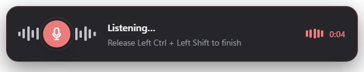
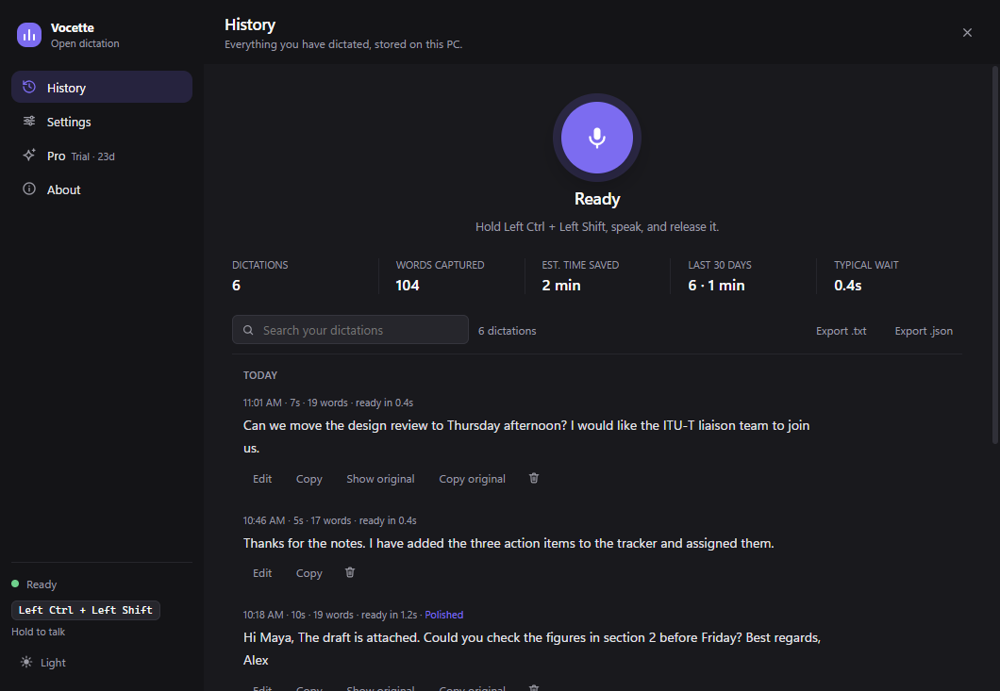

Dictation that stays on your PC.
Hold a key, speak, let go. Your words appear where you are typing — spelled right, tidied up, and never sent anywhere.
For Windows, 64-bit. No account, no subscription, no API key.
-
You say
Vocette writesUm,so I think we should,uh,move the meeting toTuesday, no sorry,Wednesday.So I think we should move the meeting to Wednesday.
-
You say
Please send the ITUT draft to Kirinda before Friday.
Vocette writesPlease send the ITU-T draft to Kirinde before Friday.
-
You say
It was,
Vocette writeslike,really good.Scratch that.It was great.It was great.
How it works
The same three moves in every app — email, chat, documents, the browser, your code editor.
-
Hold the shortcut
Left Ctrl + Left Shift by default, or any keys you choose. The microphone opens a tenth of a second after you press, so a word spoken straight away is less likely to be cut off. Prefer tapping? Press once to start, again to stop, and Esc to cancel.
-
Say it naturally
Pause, restart, say “no sorry” and correct yourself. A small bar near the bottom of the screen shows it is listening.
-
Let go
The text appears where your cursor is. Whatever you had copied is put back on your clipboard straight after.


Built around what people put up with in other dictation apps
Each of these is how Vocette behaves today, and each one was tested before it went on this page.
- Your voice stays on your computer
- Speech is turned into text on your PC. After the one-time model download it needs no internet connection at all. No recording is ever written to disk.
- Your clipboard is put back
- Vocette borrows the clipboard to paste, then restores what you had copied. Forgot where it went? Alt + Shift + V pastes your last dictation again.
- It never types into a window you have left
- If you switch windows while it is working, or the app runs as administrator, Vocette keeps the text ready and tells you, instead of pasting somewhere you did not choose.
- Your words, spelled your way
- Add the names, acronyms and product terms you use. Vocette corrects near misses after it hears you, and your own replacements and snippets — “my address”, a signature — expand as you speak.
- It says what you said
- Clean-up removes “um”, stutters and the corrections you speak — it does not rewrite your sentences. The words the recogniser actually heard are always one click away in your history.
- Silence stays silent
- Press the shortcut by accident and nothing is pasted — no invented “Thank you.” from an empty recording.
- Speed you can check
- Every dictation shows how long the text took after you let go, measured on your own PC, and your history keeps the typical wait.
0.4 s
From letting go to text, for a four-second sentence, measured in the released app on an ordinary business laptop (Intel Core Ultra 7 265U, Windows 11, no graphics card). A 32-second paragraph takes about three and a half seconds. The first dictation after Vocette starts, or after five minutes of rest, can take a few seconds longer while the speech model loads. No internet connection is used.
Free for everyday dictation. Pro if you live in it.
Every install includes 30 days of Pro. After that, keep using the free version for as long as you like — nothing you rely on stops working.
Free
US$0, for good
- Unlimited dictation, any length, on your PC
- Clean-up, spoken corrections and line breaks
- Up to 50 of your own words
- Up to 20 replacements and snippets
- History, retry, paste last, clipboard restore
- Your own cloud provider, if you prefer one
Pro
US$5 a month, or US$50 a year
Two months free with the yearly plan · up to 3 PCs · cancel any time
- Everything in Free
- AI polish: clean, professional, casual or notes — and the original is always kept
- Up to 500 of your own words
- Up to 200 replacements and snippets
- Support by email
AI polish uses a language model you choose — one that runs on your PC, or your own account with a provider. Your first payment is refundable within 30 days, no questions. Cancel any time and Pro stays on until the end of the period you paid for.
Questions
Is the free version really free?
Yes. Dictation is never metered or capped, and it does not stop after a trial. Pro adds things power users ask for; it does not take anything away from anyone else.
Which languages does it understand?
The on-device model recognises 25 European languages and works out which one you are speaking by itself: Bulgarian, Croatian, Czech, Danish, Dutch, English, Estonian, Finnish, French, German, Greek, Hungarian, Italian, Latvian, Lithuanian, Maltese, Polish, Portuguese, Romanian, Russian, Slovak, Slovenian, Spanish, Swedish and Ukrainian. For other languages you can connect your own cloud provider.
What does my computer need?
Windows 11 or 10, 64-bit (it is tested on Windows 11), about 700 MB of disk space for the speech model, and about 1 GB of free memory while you dictate. Vocette releases that memory after five minutes of rest. No graphics card is needed.
Is my audio stored or sent anywhere?
No. The recording is held in memory only while it is being turned into text, then erased. Your transcripts are kept in a history file on your PC, which you can clear at any time. The only times Vocette uses the internet are listed in its privacy page.
Does it work offline?
Yes, once the speech model has been downloaded. With Pro, Vocette asks the payment provider once a day whether your subscription is still active; offline, Pro keeps working for 30 days after the last answer.
Does it update itself?
No. If you switch it on, Vocette checks once a day whether a newer version exists and tells you; you download it yourself. Nothing is ever installed behind your back.
Why does Windows warn me when I install it?
Until the installer carries a code-signing certificate, Windows SmartScreen shows “Windows protected your PC” for new apps. Choose “More info”, then “Run anyway”.
Is there a Mac or Linux version?
Not yet. The code supports both, but they have not been tested, so they are not offered.
Can I get a refund?
Yes — your first payment, within 30 days, for any reason. Cancelling stops the next renewal, and Pro stays on until the end of the period you paid for. See the refund policy.
Is it open source?
Yes, under the MIT licence: you can read every line, and build it yourself if you like. Buying Pro pays for the work, and gets you ready-made builds and support.